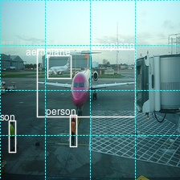
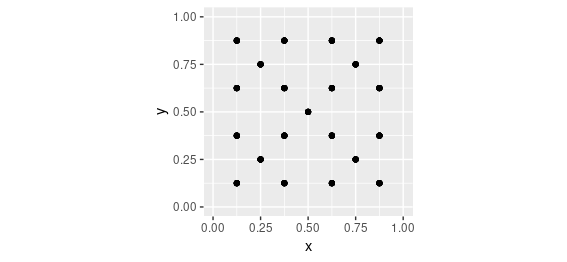
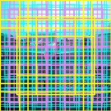

A few weeks ago, we provided an introduction to the task of naming and locating objects in images. Crucially, we confined ourselves to detecting a single object in an image. Reading that article, you might have thought “can’t we just extend this approach to several objects”? The short answer is, not in a straightforward way. We’ll see a longer answer shortly.
In this post, we want to detail one viable approach, explaining (and coding) the steps involved. We won’t, however, end up with a production-ready model. So if you read on, you won’t have a model you can export and put on your smartphone, for use in the wild. You should, however, have learned a bit about how this - object detection - is even possible. After all, it might look like magic!
The code below is heavily based on fast.ai’s implementation of SSD. While this is not the first time we’re “porting” fast.ai models, in this case we found differences in execution models between PyTorch and TensorFlow to be especially striking, and we will briefly touch on this in our discussion.
So why is object detection hard?
As we saw, we can classify and detect a single object as follows. We make use of a powerful feature extractor, such as Resnet 50, add a few conv layers for specialization, and then, concatenate two outputs: one that indicates class, and one that has four coordinates specifying a bounding box.
Now, to detect several objects, can’t we just have several class outputs, and several bounding boxes? Unfortunately we can’t. Assume there are two cute cats in the image, and we have just two bounding box detectors. How does each of them know which cat to detect? What happens in practice is that both of them try to designate both cats, so we end up with two bounding boxes in the middle - where there’s no cat. It’s a bit like averaging a bimodal distribution.
What can be done? Overall, there are three approaches to object detection, differing in performance in both common senses of the word: execution time and precision.
Probably the first option you’d think of (if you haven’t been exposed to the topic before) is running the algorithm over the image piece by piece. This is called the sliding windows approach, and even though in a naive implementation, it would require excessive time, it can be run effectively if making use of fully convolutional models (cf. Overfeat (Sermanet et al. 2013)).
Currently the best precision is gained from region proposal approaches (R-CNN(Girshick et al. 2013), Fast R-CNN(Girshick 2015), Faster R-CNN(Ren et al. 2015)). These operate in two steps. A first step points out regions of interest in an image. Then, a convnet classifies and localizes the objects in each region. In the first step, originally non-deep-learning algorithms were used. With Faster R-CNN though, a convnet takes care of region proposal as well, such that the method now is “fully deep learning”.
Last but not least, there is the class of single shot detectors, like YOLO(Redmon et al. 2015)(Redmon and Farhadi 2016)(Redmon and Farhadi 2018)and SSD(Liu et al. 2015). Just as Overfeat, these do a single pass only, but they add an additional feature that boosts precision: anchor boxes.

Anchor boxes are prototypical object shapes, arranged systematically over the image. In the simplest case, these can just be rectangles (squares) spread out systematically in a grid. A simple grid already solves the basic problem we started with, above: How does each detector know which object to detect? In a single-shot approach like SSD, each detector is mapped to - responsible for - a specific anchor box. We’ll see how this can be achieved below.
What if we have several objects in a grid cell? We can assign more than one anchor box to each cell. Anchor boxes are created with different aspect ratios, to provide a good match to entities of different proportions, such as people or trees on the one hand, and bicycles or balconies on the other. You can see these different anchor boxes in the above figure, in illustrations b and c.
Now, what if an object spans several grid cells, or even the whole image? It won’t have sufficient overlap with any of the boxes to allow for successful detection. For that reason, SSD puts detectors at several stages in the model - a set of detectors after each successive step of downscaling. We see 8x8 and 4x4 grids in the figure above.
In this post, we show how to code a very basic single-shot approach, inspired by SSD but not going to full lengths. We’ll have a basic 16x16 grid of uniform anchors, all applied at the same resolution. In the end, we indicate how to extend this to different aspect ratios and resolutions, focusing on the model architecture.
A basic single-shot detector
We’re using the same dataset as in Naming and locating objects in images - Pascal VOC, the 2007 edition - and we start out with the same preprocessing steps, up and until we have an object imageinfo that contains, in every row, information about a single object in an image.1
Further preprocessing
To be able to detect multiple objects, we need to aggregate all information on a single image into a single row.
imageinfo4ssd <- imageinfo %>%
select(category_id,
file_name,
name,
x_left,
y_top,
x_right,
y_bottom,
ends_with("scaled"))
imageinfo4ssd <- imageinfo4ssd %>%
group_by(file_name) %>%
summarise(
categories = toString(category_id),
name = toString(name),
xl = toString(x_left_scaled),
yt = toString(y_top_scaled),
xr = toString(x_right_scaled),
yb = toString(y_bottom_scaled),
xl_orig = toString(x_left),
yt_orig = toString(y_top),
xr_orig = toString(x_right),
yb_orig = toString(y_bottom),
cnt = n()
)
Let’s check we got this right.
example <- imageinfo4ssd[5, ]
img <- image_read(file.path(img_dir, example$file_name))
name <- (example$name %>% str_split(pattern = ", "))[[1]]
x_left <- (example$xl_orig %>% str_split(pattern = ", "))[[1]]
x_right <- (example$xr_orig %>% str_split(pattern = ", "))[[1]]
y_top <- (example$yt_orig %>% str_split(pattern = ", "))[[1]]
y_bottom <- (example$yb_orig %>% str_split(pattern = ", "))[[1]]
img <- image_draw(img)
for (i in 1:example$cnt) {
rect(x_left[i],
y_bottom[i],
x_right[i],
y_top[i],
border = "white",
lwd = 2)
text(
x = as.integer(x_right[i]),
y = as.integer(y_top[i]),
labels = name[i],
offset = 1,
pos = 2,
cex = 1,
col = "white"
)
}
dev.off()
print(img)

Now we construct the anchor boxes.
Anchors
Like we said above, here we will have one anchor box per cell. Thus, grid cells and anchor boxes, in our case, are the same thing, and we’ll call them by both names, interchangingly, depending on the context. Just keep in mind that in more complex models, these will most probably be different entities.
Our grid will be of size 4x4. We will need the cells’ coordinates, and we’ll start with a center x - center y - height - width representation.
Here, first, are the center coordinates.
We can plot them.
ggplot(data.frame(x = anchor_xs, y = anchor_ys), aes(x, y)) +
geom_point() +
coord_cartesian(xlim = c(0,1), ylim = c(0,1)) +
theme(aspect.ratio = 1)

The center coordinates are supplemented by height and width:
Combining centers, heights and widths gives us the first representation.
anchors <- cbind(anchor_centers, anchor_height_width)
anchors
[,1] [,2] [,3] [,4]
[1,] 0.125 0.125 0.25 0.25
[2,] 0.125 0.375 0.25 0.25
[3,] 0.125 0.625 0.25 0.25
[4,] 0.125 0.875 0.25 0.25
[5,] 0.375 0.125 0.25 0.25
[6,] 0.375 0.375 0.25 0.25
[7,] 0.375 0.625 0.25 0.25
[8,] 0.375 0.875 0.25 0.25
[9,] 0.625 0.125 0.25 0.25
[10,] 0.625 0.375 0.25 0.25
[11,] 0.625 0.625 0.25 0.25
[12,] 0.625 0.875 0.25 0.25
[13,] 0.875 0.125 0.25 0.25
[14,] 0.875 0.375 0.25 0.25
[15,] 0.875 0.625 0.25 0.25
[16,] 0.875 0.875 0.25 0.25In subsequent manipulations, we will sometimes we need a different representation: the corners (top-left, top-right, bottom-right, bottom-left) of the grid cells.
hw2corners <- function(centers, height_width) {
cbind(centers - height_width / 2, centers + height_width / 2) %>% unname()
}
# cells are indicated by (xl, yt, xr, yb)
# successive rows first go down in the image, then to the right
anchor_corners <- hw2corners(anchor_centers, anchor_height_width)
anchor_corners
[,1] [,2] [,3] [,4]
[1,] 0.00 0.00 0.25 0.25
[2,] 0.00 0.25 0.25 0.50
[3,] 0.00 0.50 0.25 0.75
[4,] 0.00 0.75 0.25 1.00
[5,] 0.25 0.00 0.50 0.25
[6,] 0.25 0.25 0.50 0.50
[7,] 0.25 0.50 0.50 0.75
[8,] 0.25 0.75 0.50 1.00
[9,] 0.50 0.00 0.75 0.25
[10,] 0.50 0.25 0.75 0.50
[11,] 0.50 0.50 0.75 0.75
[12,] 0.50 0.75 0.75 1.00
[13,] 0.75 0.00 1.00 0.25
[14,] 0.75 0.25 1.00 0.50
[15,] 0.75 0.50 1.00 0.75
[16,] 0.75 0.75 1.00 1.00Let’s take our sample image again and plot it, this time including the grid cells. Note that we display the scaled image now - the way the network is going to see it.
example <- imageinfo4ssd[5, ]
name <- (example$name %>% str_split(pattern = ", "))[[1]]
x_left <- (example$xl %>% str_split(pattern = ", "))[[1]]
x_right <- (example$xr %>% str_split(pattern = ", "))[[1]]
y_top <- (example$yt %>% str_split(pattern = ", "))[[1]]
y_bottom <- (example$yb %>% str_split(pattern = ", "))[[1]]
img <- image_read(file.path(img_dir, example$file_name))
img <- image_resize(img, geometry = "224x224!")
img <- image_draw(img)
for (i in 1:example$cnt) {
rect(x_left[i],
y_bottom[i],
x_right[i],
y_top[i],
border = "white",
lwd = 2)
text(
x = as.integer(x_right[i]),
y = as.integer(y_top[i]),
labels = name[i],
offset = 0,
pos = 2,
cex = 1,
col = "white"
)
}
for (i in 1:nrow(anchor_corners)) {
rect(
anchor_corners[i, 1] * 224,
anchor_corners[i, 4] * 224,
anchor_corners[i, 3] * 224,
anchor_corners[i, 2] * 224,
border = "cyan",
lwd = 1,
lty = 3
)
}
dev.off()
print(img)

Now it’s time to address the possibly greatest mystery when you’re new to object detection: How do you actually construct the ground truth input to the network?
That is the so-called “matching problem”.
Matching problem
To train the network, we need to assign the ground truth boxes to the grid cells/anchor boxes. We do this based on overlap between bounding boxes on the one hand, and anchor boxes on the other. Overlap is computed using Intersection over Union (IoU, =Jaccard Index), as usual.
Assume we’ve already computed the Jaccard index for all ground truth box - grid cell combinations. We then use the following algorithm:
For each ground truth object, find the grid cell it maximally overlaps with.
For each grid cell, find the object it overlaps with most.
In both cases, identify the entity of greatest overlap as well as the amount of overlap.
When criterium (1) applies, it overrides criterium (2).
When criterium (1) applies, set the amount overlap to a constant, high value: 1.99.
Return the combined result, that is, for each grid cell, the object and amount of best (as per the above criteria) overlap.
Here’s the implementation.
# overlaps shape is: number of ground truth objects * number of grid cells
map_to_ground_truth <- function(overlaps) {
# for each ground truth object, find maximally overlapping cell (crit. 1)
# measure of overlap, shape: number of ground truth objects
prior_overlap <- apply(overlaps, 1, max)
# which cell is this, for each object
prior_idx <- apply(overlaps, 1, which.max)
# for each grid cell, what object does it overlap with most (crit. 2)
# measure of overlap, shape: number of grid cells
gt_overlap <- apply(overlaps, 2, max)
# which object is this, for each cell
gt_idx <- apply(overlaps, 2, which.max)
# set all definitely overlapping cells to respective object (crit. 1)
gt_overlap[prior_idx] <- 1.99
# now still set all others to best match by crit. 2
# actually it's other way round, we start from (2) and overwrite with (1)
for (i in 1:length(prior_idx)) {
# iterate over all cells "absolutely assigned"
p <- prior_idx[i] # get respective grid cell
gt_idx[p] <- i # assign this cell the object number
}
# return: for each grid cell, object it overlaps with most + measure of overlap
list(gt_overlap, gt_idx)
}
Now here’s the IoU calculation we need for that. We can’t just use the IoU function from the previous post because this time, we want to compute overlaps with all grid cells simultaneously. It’s easiest to do this using tensors, so we temporarily convert the R matrices to tensors:
# compute IOU
jaccard <- function(bbox, anchor_corners) {
bbox <- k_constant(bbox)
anchor_corners <- k_constant(anchor_corners)
intersection <- intersect(bbox, anchor_corners)
union <-
k_expand_dims(box_area(bbox), axis = 2) + k_expand_dims(box_area(anchor_corners), axis = 1) - intersection
res <- intersection / union
res %>% k_eval()
}
# compute intersection for IOU
intersect <- function(box1, box2) {
box1_a <- box1[, 3:4] %>% k_expand_dims(axis = 2)
box2_a <- box2[, 3:4] %>% k_expand_dims(axis = 1)
max_xy <- k_minimum(box1_a, box2_a)
box1_b <- box1[, 1:2] %>% k_expand_dims(axis = 2)
box2_b <- box2[, 1:2] %>% k_expand_dims(axis = 1)
min_xy <- k_maximum(box1_b, box2_b)
intersection <- k_clip(max_xy - min_xy, min = 0, max = Inf)
intersection[, , 1] * intersection[, , 2]
}
box_area <- function(box) {
(box[, 3] - box[, 1]) * (box[, 4] - box[, 2])
}
By now you might be wondering - when does all this happen? Interestingly, the example we’re following, fast.ai’s object detection notebook, does all this as part of the loss calculation! In TensorFlow, this is possible in principle (requiring some juggling of tf$cond, tf$while_loop etc., as well as a bit of creativity finding replacements for non-differentiable operations). But, simple facts - like the Keras loss function expecting the same shapes for y_true and y_pred - made it impossible to follow the fast.ai approach. Instead, all matching will take place in the data generator.
Data generator
The generator has the familiar structure, known from the predecessor post. Here is the complete code - we’ll talk through the details immediately.
batch_size <- 16
image_size <- target_width # same as height
threshold <- 0.4
class_background <- 21
ssd_generator <-
function(data,
target_height,
target_width,
shuffle,
batch_size) {
i <- 1
function() {
if (shuffle) {
indices <- sample(1:nrow(data), size = batch_size)
} else {
if (i + batch_size >= nrow(data))
i <<- 1
indices <- c(i:min(i + batch_size - 1, nrow(data)))
i <<- i + length(indices)
}
x <-
array(0, dim = c(length(indices), target_height, target_width, 3))
y1 <- array(0, dim = c(length(indices), 16))
y2 <- array(0, dim = c(length(indices), 16, 4))
for (j in 1:length(indices)) {
x[j, , , ] <-
load_and_preprocess_image(data[[indices[j], "file_name"]], target_height, target_width)
class_string <- data[indices[j], ]$categories
xl_string <- data[indices[j], ]$xl
yt_string <- data[indices[j], ]$yt
xr_string <- data[indices[j], ]$xr
yb_string <- data[indices[j], ]$yb
classes <- str_split(class_string, pattern = ", ")[[1]]
xl <-
str_split(xl_string, pattern = ", ")[[1]] %>% as.double() %>% `/`(image_size)
yt <-
str_split(yt_string, pattern = ", ")[[1]] %>% as.double() %>% `/`(image_size)
xr <-
str_split(xr_string, pattern = ", ")[[1]] %>% as.double() %>% `/`(image_size)
yb <-
str_split(yb_string, pattern = ", ")[[1]] %>% as.double() %>% `/`(image_size)
# rows are objects, columns are coordinates (xl, yt, xr, yb)
# anchor_corners are 16 rows with corresponding coordinates
bbox <- cbind(xl, yt, xr, yb)
overlaps <- jaccard(bbox, anchor_corners)
c(gt_overlap, gt_idx) %<-% map_to_ground_truth(overlaps)
gt_class <- classes[gt_idx]
pos <- gt_overlap > threshold
gt_class[gt_overlap < threshold] <- 21
# columns correspond to objects
boxes <- rbind(xl, yt, xr, yb)
# columns correspond to object boxes according to gt_idx
gt_bbox <- boxes[, gt_idx]
# set those with non-sufficient overlap to 0
gt_bbox[, !pos] <- 0
gt_bbox <- gt_bbox %>% t()
y1[j, ] <- as.integer(gt_class) - 1
y2[j, , ] <- gt_bbox
}
x <- x %>% imagenet_preprocess_input()
y1 <- y1 %>% to_categorical(num_classes = class_background)
list(x, list(y1, y2))
}
}
Before the generator can trigger any calculations, it needs to first split apart the multiple classes and bounding box coordinates that come in one row of the dataset.
To make this more concrete, we show what happens for the “2 people and 2 airplanes” image we just displayed.
We copy out code chunk-by-chunk from the generator so results can actually be displayed for inspection.
data <- imageinfo4ssd
indices <- 1:8
j <- 5 # this is our image
class_string <- data[indices[j], ]$categories
xl_string <- data[indices[j], ]$xl
yt_string <- data[indices[j], ]$yt
xr_string <- data[indices[j], ]$xr
yb_string <- data[indices[j], ]$yb
classes <- str_split(class_string, pattern = ", ")[[1]]
xl <- str_split(xl_string, pattern = ", ")[[1]] %>% as.double() %>% `/`(image_size)
yt <- str_split(yt_string, pattern = ", ")[[1]] %>% as.double() %>% `/`(image_size)
xr <- str_split(xr_string, pattern = ", ")[[1]] %>% as.double() %>% `/`(image_size)
yb <- str_split(yb_string, pattern = ", ")[[1]] %>% as.double() %>% `/`(image_size)
So here are that image’s classes:
classes
[1] "1" "1" "15" "15"And its left bounding box coordinates:
xl
[1] 0.20535714 0.26339286 0.38839286 0.04910714Now we can cbind those vectors together to obtain a object (bbox) where rows are objects, and coordinates are in the columns:
# rows are objects, columns are coordinates (xl, yt, xr, yb)
bbox <- cbind(xl, yt, xr, yb)
bbox
xl yt xr yb
[1,] 0.20535714 0.2723214 0.75000000 0.6473214
[2,] 0.26339286 0.3080357 0.39285714 0.4330357
[3,] 0.38839286 0.6383929 0.42410714 0.8125000
[4,] 0.04910714 0.6696429 0.08482143 0.8437500So we’re ready to compute these boxes’ overlap with all of the 16 grid cells. Recall that anchor_corners stores the grid cells in an analogous way, the cells being in the rows and the coordinates in the columns.
# anchor_corners are 16 rows with corresponding coordinates
overlaps <- jaccard(bbox, anchor_corners)
Now that we have the overlaps, we can call the matching logic:
c(gt_overlap, gt_idx) %<-% map_to_ground_truth(overlaps)
gt_overlap
[1] 0.00000000 0.03961473 0.04358353 1.99000000 0.00000000 1.99000000 1.99000000 0.03357313 0.00000000
[10] 0.27127662 0.16019417 0.00000000 0.00000000 0.00000000 0.00000000 0.00000000Looking for the value 1.99 in the above - the value indicating maximal, by the above criteria, overlap of an object with a grid cell - we see that box 4 (counting in column-major order here like R does) got matched (to a person, as we’ll see soon), box 6 did (to an airplane), and box 7 did (to a person). How about the other airplane? It got lost in the matching.
This is not a problem of the matching algorithm though - it would disappear if we had more than one anchor box per grid cell.
Looking for the objects just mentioned in the class index, gt_idx, we see that indeed box 4 got matched to object 4 (a person), box 6 got matched to object 2 (an airplane), and box 7 got matched to object 3 (the other person):
gt_idx
[1] 1 1 4 4 1 2 3 3 1 1 1 1 1 1 1 1By the way, don’t worry about the abundance of 1s here. These are remnants from using which.max to determine maximal overlap, and will disappear soon.
Instead of thinking in object numbers, we should think in object classes (the respective numerical codes, that is).
gt_class <- classes[gt_idx]
gt_class
[1] "1" "1" "15" "15" "1" "1" "15" "15" "1" "1" "1" "1" "1" "1" "1" "1"So far, we take into account even the very slightest overlap - of 0.1 percent, say. Of course, this makes no sense. We set all cells with an overlap < 0.4 to the background class:
pos <- gt_overlap > threshold
gt_class[gt_overlap < threshold] <- 21
gt_class
[1] "21" "21" "21" "15" "21" "1" "15" "21" "21" "21" "21" "21" "21" "21" "21" "21"Now, to construct the targets for learning, we need to put the mapping we found into a data structure.
The following gives us a 16x4 matrix of cells and the boxes they are responsible for:
xl yt xr yb
[1,] 0.00000000 0.0000000 0.00000000 0.0000000
[2,] 0.00000000 0.0000000 0.00000000 0.0000000
[3,] 0.00000000 0.0000000 0.00000000 0.0000000
[4,] 0.04910714 0.6696429 0.08482143 0.8437500
[5,] 0.00000000 0.0000000 0.00000000 0.0000000
[6,] 0.26339286 0.3080357 0.39285714 0.4330357
[7,] 0.38839286 0.6383929 0.42410714 0.8125000
[8,] 0.00000000 0.0000000 0.00000000 0.0000000
[9,] 0.00000000 0.0000000 0.00000000 0.0000000
[10,] 0.00000000 0.0000000 0.00000000 0.0000000
[11,] 0.00000000 0.0000000 0.00000000 0.0000000
[12,] 0.00000000 0.0000000 0.00000000 0.0000000
[13,] 0.00000000 0.0000000 0.00000000 0.0000000
[14,] 0.00000000 0.0000000 0.00000000 0.0000000
[15,] 0.00000000 0.0000000 0.00000000 0.0000000
[16,] 0.00000000 0.0000000 0.00000000 0.0000000Together, gt_bbox and gt_class make up the network’s learning targets.
y1[j, ] <- as.integer(gt_class) - 1
y2[j, , ] <- gt_bbox
To summarize, our target is a list of two outputs:
- the bounding box ground truth of dimensionality number of grid cells times number of box coordinates, and
- the class ground truth of size number of grid cells times number of classes.
We can verify this by asking the generator for a batch of inputs and targets:
[1] 16 16 21dim(y2)
[1] 16 16 4Finally, we’re ready for the model.
The model
We start from Resnet 50 as a feature extractor. This gives us tensors of size 7x7x2048.
feature_extractor <- application_resnet50(
include_top = FALSE,
input_shape = c(224, 224, 3)
)
Then, we append a few conv layers. Three of those layers are “just” there for capacity; the last one though has a additional task: By virtue of strides = 2, it downsamples its input to from 7x7 to 4x4 in the height/width dimensions.
This resolution of 4x4 gives us exactly the grid we need!
input <- feature_extractor$input
common <- feature_extractor$output %>%
layer_conv_2d(
filters = 256,
kernel_size = 3,
padding = "same",
activation = "relu",
name = "head_conv1_1"
) %>%
layer_batch_normalization() %>%
layer_conv_2d(
filters = 256,
kernel_size = 3,
padding = "same",
activation = "relu",
name = "head_conv1_2"
) %>%
layer_batch_normalization() %>%
layer_conv_2d(
filters = 256,
kernel_size = 3,
padding = "same",
activation = "relu",
name = "head_conv1_3"
) %>%
layer_batch_normalization() %>%
layer_conv_2d(
filters = 256,
kernel_size = 3,
strides = 2,
padding = "same",
activation = "relu",
name = "head_conv2"
) %>%
layer_batch_normalization()
Now we can do as we did in that other post, attach one output for the bounding boxes and one for the classes.
Note how we don’t aggregate over the spatial grid though. Instead, we reshape it so the 4x4 grid cells appear sequentially.
Here first is the class output. We have 21 classes (the 20 classes from PASCAL, plus background), and we need to classify each cell. We thus end up with an output of size 16x21.
class_output <-
layer_conv_2d(
common,
filters = 21,
kernel_size = 3,
padding = "same",
name = "class_conv"
) %>%
layer_reshape(target_shape = c(16, 21), name = "class_output")
For the bounding box output, we apply a tanh activation so that values lie between -1 and 1. This is because they are used to compute offsets to the grid cell centers.
These computations happen in the layer_lambda. We start from the actual anchor box centers, and move them around by a scaled-down version of the activations. We then convert these to anchor corners - same as we did above with the ground truth anchors, just operating on tensors, this time.
bbox_output <-
layer_conv_2d(
common,
filters = 4,
kernel_size = 3,
padding = "same",
name = "bbox_conv"
) %>%
layer_reshape(target_shape = c(16, 4), name = "bbox_flatten") %>%
layer_activation("tanh") %>%
layer_lambda(
f = function(x) {
activation_centers <-
(x[, , 1:2] / 2 * gridsize) + k_constant(anchors[, 1:2])
activation_height_width <-
(x[, , 3:4] / 2 + 1) * k_constant(anchors[, 3:4])
activation_corners <-
k_concatenate(
list(
activation_centers - activation_height_width / 2,
activation_centers + activation_height_width / 2
)
)
activation_corners
},
name = "bbox_output"
)
Now that we have all layers, let’s quickly finish up the model definition:
model <- keras_model(
inputs = input,
outputs = list(class_output, bbox_output)
)
The last ingredient missing, then, is the loss function.
Loss
To the model’s two outputs - a classification output and a regression output - correspond two losses, just as in the basic classification + localization model. Only this time, we have 16 grid cells to take care of.
Class loss uses tf$nn$sigmoid_cross_entropy_with_logits to compute the binary crossentropy between targets and unnormalized network activation, summing over grid cells and dividing by the number of classes.
# shapes are batch_size * 16 * 21
class_loss <- function(y_true, y_pred) {
class_loss <-
tf$nn$sigmoid_cross_entropy_with_logits(labels = y_true, logits = y_pred)
class_loss <-
tf$reduce_sum(class_loss) / tf$cast(n_classes + 1, "float32")
class_loss
}
Localization loss is calculated for all boxes where in fact there is an object present in the ground truth. All other activations get masked out.
The loss itself then is just mean absolute error, scaled by a multiplier designed to bring both loss components to similar magnitudes. In practice, it makes sense to experiment a bit here.
# shapes are batch_size * 16 * 4
bbox_loss <- function(y_true, y_pred) {
# calculate localization loss for all boxes where ground truth was assigned some overlap
# calculate mask
pos <- y_true[, , 1] + y_true[, , 3] > 0
pos <-
pos %>% k_cast(tf$float32) %>% k_reshape(shape = c(batch_size, 16, 1))
pos <-
tf$tile(pos, multiples = k_constant(c(1L, 1L, 4L), dtype = tf$int32))
diff <- y_pred - y_true
# mask out irrelevant activations
diff <- diff %>% tf$multiply(pos)
loc_loss <- diff %>% tf$abs() %>% tf$reduce_mean()
loc_loss * 100
}
Training
Above, we’ve already defined the model but we still need to freeze the feature detector’s weights and compile it.
model %>% freeze_weights()
model %>% unfreeze_weights(from = "head_conv1_1")
model
And we’re ready to train. Training this model is very time consuming, such that for applications “in the real world”, we might want to do optimize the program for memory consumption and runtime. Like we said above, in this post we’re really focusing on understanding the approach.
steps_per_epoch <- nrow(imageinfo4ssd) / batch_size
model %>% fit_generator(
train_gen,
steps_per_epoch = steps_per_epoch,
epochs = 5,
callbacks = callback_model_checkpoint(
"weights.{epoch:02d}-{loss:.2f}.hdf5",
save_weights_only = TRUE
)
)
After 5 epochs, this is what we get from the model. It’s on the right way, but it will need many more epochs to reach decent performance.

Apart from training for many more epochs, what could we do? We’ll wrap up the post with two directions for improvement, but won’t implement them completely.
The first one actually is quick to implement. Here we go.
Focal loss
Above, we were using cross entropy for the classification loss. Let’s look at what that entails.

The figure shows loss incurred when the correct answer is 1. We see that even though loss is highest when the network is very wrong, it still incurs significant loss when it’s “right for all practical purposes” - meaning, its output is just above 0.5.
In cases of strong class imbalance, this behavior can be problematic. Much training energy is wasted on getting “even more right” on cases where the net is right already - as will happen with instances of the dominant class. Instead, the network should dedicate more effort to the hard cases - exemplars of the rarer classes.
In object detection, the prevalent class is background - no class, really. Instead of getting more and more proficient at predicting background, the network had better learn how to tell apart the actual object classes.
An alternative was pointed out by the authors of the RetinaNet paper(Lin et al. 2017): They introduced a parameter \(\gamma\)2 that results in decreasing loss for samples that already have been well classified.

Different implementations are found on the net, as well as different settings for the hyperparameters. Here’s a direct port of the fast.ai code:
alpha <- 0.25
gamma <- 1
get_weights <- function(y_true, y_pred) {
p <- y_pred %>% k_sigmoid()
pt <- y_true*p + (1-p)*(1-y_true)
w <- alpha*y_true + (1-alpha)*(1-y_true)
w <- w * (1-pt)^gamma
w
}
class_loss_focal <- function(y_true, y_pred) {
w <- get_weights(y_true, y_pred)
cx <- tf$nn$sigmoid_cross_entropy_with_logits(labels = y_true, logits = y_pred)
weighted_cx <- w * cx
class_loss <-
tf$reduce_sum(weighted_cx) / tf$cast(21, "float32")
class_loss
}
From testing this loss, it seems to yield better performance, but does not render obsolete the need for substantive training time.
Finally, let’s see what we’d have to do if we wanted to use several anchor boxes per grid cells.
More anchor boxes
The “real SSD” has anchor boxes of different aspect ratios, and it puts detectors at different stages of the network. Let’s implement this.
Anchor box coordinates
We create anchor boxes as combinations of
- different scales, and
anchor_zooms <- c(0.7, 1, 1.3)
anchor_zooms
[1] 0.7 1.0 1.3- different aspect ratios:
[,1] [,2]
[1,] 1.0 1.0
[2,] 1.0 0.5
[3,] 0.5 1.0In this example, we have nine different combinations:
[,1] [,2]
[1,] 0.70 0.70
[2,] 0.70 0.35
[3,] 0.35 0.70
[4,] 1.00 1.00
[5,] 1.00 0.50
[6,] 0.50 1.00
[7,] 1.30 1.30
[8,] 1.30 0.65
[9,] 0.65 1.30We place detectors at three stages. Resolutions will be 4x4 (as we had before) and additionally, 2x2 and 1x1:
anchor_grids <- c(4,2,1)
Once that’s been determined, we can compute
- x coordinates of the box centers:
- y coordinates of the box centers:
- the x-y representations of the centers:
- the sizes of the boxes:
- the sizes of the base grids (0.25, 0.5, and 1):
- the centers-width-height representations of the anchor boxes:
anchors <- cbind(anchor_centers, anchor_sizes)
- and finally, the corners representation of the boxes!
So here, then, is a plot of the (distinct) box centers: One in the middle, for the 9 large boxes, 4 for the 4 * 9 medium-size boxes, and 16 for the 16 * 9 small boxes.

Of course, even if we aren’t going to train this version, we at least need to see these in action!

How would a model look that could deal with these?
Model
Again, we’d start from a feature detector …
feature_extractor <- application_resnet50(
include_top = FALSE,
input_shape = c(224, 224, 3)
)
… and attach some custom conv layers.
input <- feature_extractor$input
common <- feature_extractor$output %>%
layer_conv_2d(
filters = 256,
kernel_size = 3,
padding = "same",
activation = "relu",
name = "head_conv1_1"
) %>%
layer_batch_normalization() %>%
layer_conv_2d(
filters = 256,
kernel_size = 3,
padding = "same",
activation = "relu",
name = "head_conv1_2"
) %>%
layer_batch_normalization() %>%
layer_conv_2d(
filters = 256,
kernel_size = 3,
padding = "same",
activation = "relu",
name = "head_conv1_3"
) %>%
layer_batch_normalization()
Then, things get different. We want to attach detectors (= output layers) to different stages in a pipeline of successive downsamplings. If that doesn’t call for the Keras functional API…
Here’s the downsizing pipeline.
downscale_4x4 <- common %>%
layer_conv_2d(
filters = 256,
kernel_size = 3,
strides = 2,
padding = "same",
activation = "relu",
name = "downscale_4x4"
) %>%
layer_batch_normalization()
downscale_2x2 <- downscale_4x4 %>%
layer_conv_2d(
filters = 256,
kernel_size = 3,
strides = 2,
padding = "same",
activation = "relu",
name = "downscale_2x2"
) %>%
layer_batch_normalization()
downscale_1x1 <- downscale_2x2 %>%
layer_conv_2d(
filters = 256,
kernel_size = 3,
strides = 2,
padding = "same",
activation = "relu",
name = "downscale_1x1"
) %>%
layer_batch_normalization()
The bounding box output definitions get a little messier than before, as each output has to take into account its relative anchor box coordinates.
create_bbox_output <- function(prev_layer, anchor_start, anchor_stop, suffix) {
output <- layer_conv_2d(
prev_layer,
filters = 4 * k,
kernel_size = 3,
padding = "same",
name = paste0("bbox_conv_", suffix)
) %>%
layer_reshape(target_shape = c(-1, 4), name = paste0("bbox_flatten_", suffix)) %>%
layer_activation("tanh") %>%
layer_lambda(
f = function(x) {
activation_centers <-
(x[, , 1:2] / 2 * matrix(grid_sizes[anchor_start:anchor_stop], ncol = 1)) +
k_constant(anchors[anchor_start:anchor_stop, 1:2])
activation_height_width <-
(x[, , 3:4] / 2 + 1) * k_constant(anchors[anchor_start:anchor_stop, 3:4])
activation_corners <-
k_concatenate(
list(
activation_centers - activation_height_width / 2,
activation_centers + activation_height_width / 2
)
)
activation_corners
},
name = paste0("bbox_output_", suffix)
)
output
}
Here they are: Each one attached to it’s respective stage of action in the pipeline.
bbox_output_4x4 <- create_bbox_output(downscale_4x4, 1, 144, "4x4")
bbox_output_2x2 <- create_bbox_output(downscale_2x2, 145, 180, "2x2")
bbox_output_1x1 <- create_bbox_output(downscale_1x1, 181, 189, "1x1")
The same principle applies to the class outputs.
class_output_4x4 <- create_class_output(downscale_4x4, "4x4")
class_output_2x2 <- create_class_output(downscale_2x2, "2x2")
class_output_1x1 <- create_class_output(downscale_1x1, "1x1")
And glue it all together, to get the model.
model <- keras_model(
inputs = input,
outputs = list(
bbox_output_1x1,
bbox_output_2x2,
bbox_output_4x4,
class_output_1x1,
class_output_2x2,
class_output_4x4)
)
Now, we will stop here. To run this, there is another element that has to be adjusted: the data generator. Our focus being on explaining the concepts though, we’ll leave that to the interested reader.
Conclusion
While we haven’t ended up with a good-performing model for object detection, we do hope that we’ve managed to shed some light on the mystery of object detection. What’s a bounding box? What’s an anchor (resp. prior, rep. default) box? How do you match them up in practice?
If you’ve “just” read the papers (YOLO, SSD), but never seen any code, it may seem like all actions happen in some wonderland beyond the horizon. They don’t. But coding them, as we’ve seen, can be cumbersome, even in the very basic versions we’ve implemented. To perform object detection in production, then, a lot more time has to be spent on training and tuning models. But sometimes just learning about how something works can be very satisfying.
Finally, we’d again like to stress how much this post leans on what the fast.ai guys did. Their work most definitely is enriching not just the PyTorch, but also the R-TensorFlow community!
Girshick, Ross B. 2015. “Fast R-Cnn.” CoRR abs/1504.08083. http://arxiv.org/abs/1504.08083.
Girshick, Ross B., Jeff Donahue, Trevor Darrell, and Jitendra Malik. 2013. “Rich Feature Hierarchies for Accurate Object Detection and Semantic Segmentation.” CoRR abs/1311.2524. http://arxiv.org/abs/1311.2524.
Lin, Tsung-Yi, Priya Goyal, Ross B. Girshick, Kaiming He, and Piotr Dollar. 2017. “Focal Loss for Dense Object Detection.” CoRR abs/1708.02002. http://arxiv.org/abs/1708.02002.
Liu, Wei, Dragomir Anguelov, Dumitru Erhan, Christian Szegedy, Scott E. Reed, Cheng-Yang Fu, and Alexander C. Berg. 2015. “SSD: Single Shot Multibox Detector.” CoRR abs/1512.02325. http://arxiv.org/abs/1512.02325.
Redmon, Joseph, Santosh Kumar Divvala, Ross B. Girshick, and Ali Farhadi. 2015. “You Only Look Once: Unified, Real-Time Object Detection.” CoRR abs/1506.02640. http://arxiv.org/abs/1506.02640.
Redmon, Joseph, and Ali Farhadi. 2016. “YOLO9000: Better, Faster, Stronger.” CoRR abs/1612.08242. http://arxiv.org/abs/1612.08242.
———. 2018. “YOLOv3: An Incremental Improvement.” CoRR abs/1804.02767. http://arxiv.org/abs/1804.02767.
Ren, Shaoqing, Kaiming He, Ross B. Girshick, and Jian Sun. 2015. “Faster R-Cnn: Towards Real-Time Object Detection with Region Proposal Networks.” CoRR abs/1506.01497. http://arxiv.org/abs/1506.01497.
Sermanet, Pierre, David Eigen, Xiang Zhang, Michael Mathieu, Rob Fergus, and Yann LeCun. 2013. “OverFeat: Integrated Recognition, Localization and Detection Using Convolutional Networks.” CoRR abs/1312.6229. http://arxiv.org/abs/1312.6229.